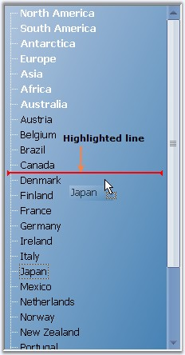
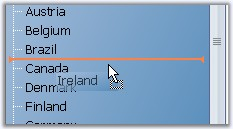

Drag drop operation in the TreeView can display a highlighted line during dragging. TreeView uses a helper class, i.e., TreeViewAdvDragHighlightTracker for this purpose. This keeps track of the highlighted node and also provides the destination where the user had decided to drop. It also allows validation whether to drag / drop a node to another node or not. We need to use the tracker class for this purpose.
|
[C#]
//In the Drag Over event // Let the highlight tracker keep track of the current highlight node. this.treeViewDragHighlightTracker.SetHighlightNode(destinationNode, ptInTree);
//In the Drag Leave event this.treeViewDragHighlightTracker.ClearHighlightNode();
//In the Drag Drop event private void treeViewAdv_DragDrop(object sender, System.Windows.Forms.DragEventArgs e) { TreeViewAdv treeView = sender as TreeViewAdv; // Get the destination and source node. TreeNodeAdv sourceNode = (TreeNodeAdv) e.Data.GetData(typeof(TreeNodeAdv)); TreeNodeAdv destinationNode = this.treeViewDragHighlightTracker.HighlightNode; TreeViewDropPositions dropPosition = this.treeViewDragHighlightTracker.DropPosition;
// Clear the highlight info in the tracker. this.treeViewDragHighlightTracker.ClearHighlightNode(); if(destinationNode != null) { switch (dropPosition) { case TreeViewDropPositions.AboveNode: sourceNode.Move(destinationNode, NodePositions.Previous); break; case TreeViewDropPositions.BelowNode: sourceNode.Move(destinationNode, NodePositions.Next); break; case TreeViewDropPositions.OnNode: sourceNode.Move(destinationNode.Nodes); destinationNode.Expand(); break; } } this.currentSourceNode = null; // Move the source node based on the tracked info. treeView.SelectedNode = sourceNode; } |
|
[VB.NET]
'In the Drag Over event ' Let the highlight tracker keep track of the current highlight node. Me.treeViewDragHighlightTracker.SetHighlightNode(destinationNode, ptInTree)
'In the Drag Leave event Me.treeViewDragHighlightTracker.ClearHighlightNode()
'In the Drag Drop event Private Sub treeViewAdv_DragDrop(ByVal sender As Object, ByVal e As System.Windows.Forms.DragEventArgs) Handles treeViewAdv1.DragDrop Dim treeView As TreeViewAdv = CType(IIf(TypeOf sender Is TreeViewAdv, sender, Nothing), TreeViewAdv) ' Get the destination and source node. Dim sourceNode As TreeNodeAdv = CType(e.Data.GetData(GetType(TreeNodeAdv)), TreeNodeAdv) Dim destinationNode As TreeNodeAdv = Me.treeViewDragHighlightTracker.HighlightNode Dim dropPosition As TreeViewDropPositions = Me.treeViewDragHighlightTracker.DropPosition ' Clear the highlight info in the tracker. Me.treeViewDragHighlightTracker.ClearHighlightNode() Me.currentSourceNode = Nothing ' Move the source node based on the tracked info. If Not destinationNode Is Nothing Then Select Case dropPosition Case TreeViewDropPositions.AboveNode sourceNode.Move(destinationNode, NodePositions.Previous) Case TreeViewDropPositions.BelowNode sourceNode.Move(destinationNode, NodePositions.Next) Case TreeViewDropPositions.OnNode sourceNode.Move(destinationNode.Nodes) destinationNode.Expand() End Select End If treeView.SelectedNode = sourceNode End Sub |

Figure 1135: Drag Drop with HighlightTracker
 Note: We can also prevent drawing highlight
for some nodes using QueryAllowedPositionForNode
event.
Note: We can also prevent drawing highlight
for some nodes using QueryAllowedPositionForNode
event.
Painting the HighlightTracker Pen
This can be done using TreeViewAdvDragHighlightTracker.QueryDragInsertInfo event.
|
treeViewAdv Property |
Description |
|
QueryDragInsertInfo |
Occurs before drawing a drag insert position. |
|
[C#]
//QueryDragInsertInfo this.treeViewDragHighlightTracker.QueryDragInsertInfo+= new QueryDragInsertInfoEventHandler(treeViewDragHighlightTracker_QueryDragInsertInfo);
// Changing the color of the highlight tracker Pen private void treeViewDragHighlightTracker_QueryDragInsertInfo(object sender, QueryDragInsertInfoEventArgs args) { args.DragInsertColor=Color.Orange; } |
|
[VB.NET]
' QueryDragInsertInfo AddHandler treeViewDragHighlightTracker.QueryDragInsertInfo, AddressOf treeViewDragHighlightTracker_QueryDragInsertInfo ' Changing the color of the highlight tracker Pen. Private Sub treeViewDragHighlightTracker_QueryDragInsertInfo(ByVal sender As Object, ByVal args As QueryDragInsertInfoEventArgs) args.DragInsertColor = Color.Orange End Sub |

Figure 1136: Orange Color HighlightTracker Pen
A sample which demonstrates the highlight tracker feature is available in the follow path.
..\My Documents\Syncfusion\EssentialStudio\Version Number\Windows\Tools.Windows\Samples\2.0\Tree Package\TreeViewAdvDragDrop
See Also
How to prevent drawing highlight for some nodes?, About Drag Drop Events